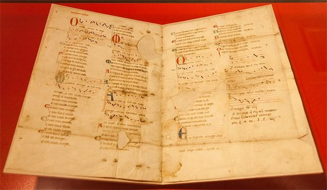
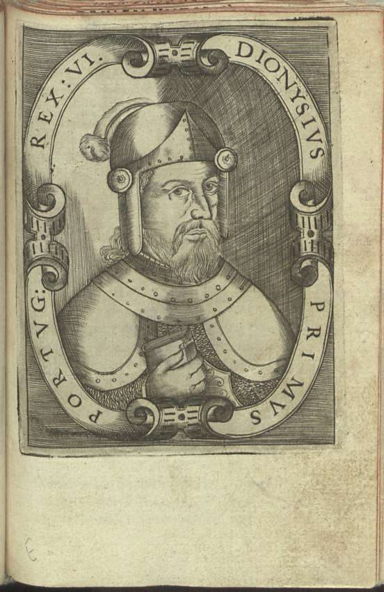
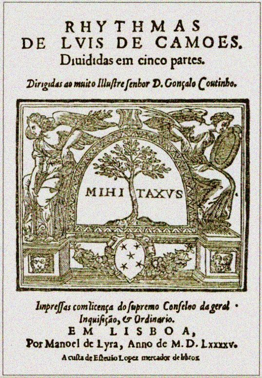

Fotografia de Luis Miguel Bugallo Sánchez, 2017. CC BY 4.0.
Ensaio da peça «i»
Canto

Pergaminho Vindel exposto; fotografia de Luis Miguel Bugallo Sánchez, 2017. CC BY-SA 4.0.
Linha (imagem estreita)

D. Dinis numa gravura de 1594 (Pedro de Mariz, Diálogos de Vária História). Domínio público.
Imagem pequena

José de Sousa Azevedo, Morte do Conde Andeiro, c. 1860. Domínio público.
Imagem dentro de uma ligação
José de Sousa Azevedo, Morte do Conde Andeiro, c. 1860. Domínio público. Wikimedia Commons ↗
Dentro de um cartão
Documento visual com tabela de identificação


Domínio público; Fonte ↗

| Autor | Luís de Camões; impressão de Manuel de Lira; reprodução anónima |
|---|---|
| Obra | Rhythmas, página de título |
| Data | 1595 |
| Licença | Domínio público |
Consultar a fonte e os direitos ↗. Reprodução redimensionada, sem recorte.
Rhythmas, 1595: página de título da edição póstuma da poesia de Camões.
Fundo animado
Grafismo gerado com recurso a IA, EPI, 2026, a partir do padrão de ondas da calçada portuguesa. Uma linha de ondas que passa da esquerda para a direita.
Texto da página, fora de qualquer «i», para o clique fora.